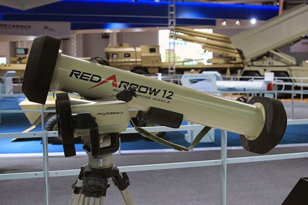
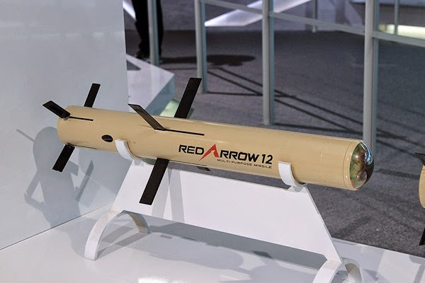
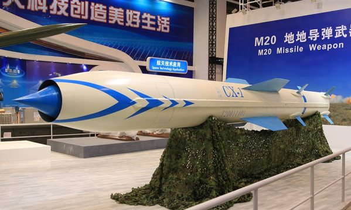
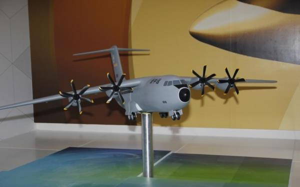
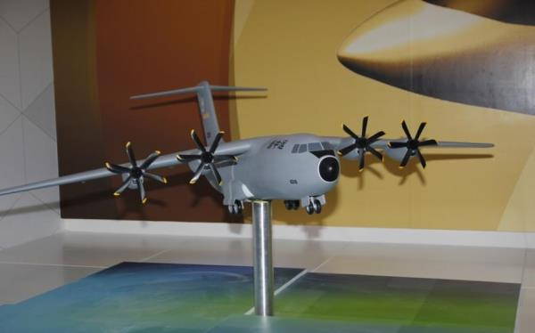

【陆军】【空军】2014年珠海航展
2014-11-12 06:42:00
原文网址：https://blog.udn.com/MengyuanWang/108908669
两年一办的珠海航展（全名为“中国国际航空航天博览会”）于周二（2014年十一月11日）正式开始。虽然名为航展，其实是中共军工业针对外销所开发的陆军和空军装备的展覧会。中共的高端外销军品大约分为三类：最常见的是对内部共军竞标失败的產品重新包装而成；其次是专为外销而设计的；最近几年，共军的自信越来越强，于是也有现役装备可供外销。不过这个航展终究是为外贸服务的，所以絶大部分展覧品不代表着中共的最高端技术，两年一次的周期也给予军迷相当的机会提早在其他场合看到这些装备。我等了两天，所有有意思的展覧品都已经上网了，才写这篇介绍；我将专注在少数几件以往不曾公开露面而且共军很有可能会自用的尖端装备（最后一件是例外）。不过今年珠海航展的陆军军品之多之精，令人印象深刻；有兴趣的读者应该到大陆的媒体上找更多的资料。
红箭12，共军版的标枪（Javelin）反坦克飞弹，重量和尺寸略大于美军版以增强破甲能力，这是典型的共军哲学：火力至上。价銭大概只有标枪飞弹的一半左右。军迷最早是在今年六月的简氏（Jane's）杂志上听到红箭12这名字；而简氏是在法国的一个军品展上拿到传单的；实件是第一次公开。红箭12的弹体。虽然中共军工產品的价銭要远低于欧美的同级產品，红外线寻标头用在反坦克飞弹上实在是太奢侈了，共军必然不会大量购买，所以有必要藉外销来实现量產。国军有几百枚标枪飞弹，每发购价超过十万美金，所以也是当寳贝一様，只有在重要演习才会打一两发作秀。CX-1超音速反舰飞弹。弹长8.8公尺，弹重3.5公吨，射程应该超过400公里。不过外销版因国际条约限制，必须小于300公里，如果是为外销开发的，只需要2公吨多的重量就可以达到这种射程（例如俄国卖给印度的BrahMos），所以这个尺寸的飞弹必然是为共军自用而设计的。以往只有苏联的SS-N-19超音速反舰飞弹超过这様的大小，但是两者外形并不相似；据称中共获得了SS-N-19后继型号的概念设计资料，那么CX-1可能就是根据这些构想，由中共自行开发完成的。不论如何，其任务显然与SS-N-19一様，也是针对美军的航母战斗群，以在其防空网的边缘就可发射打撃。这枚展示弹是早期的陆射型，但是美军的航母战斗群已经不再可能开进它的射程内（详见前文《1996台海危机和东风21D反舰弹道飞弹》），所以将来必定要改进为舰射才会进入共军序列。 JY-26远程警戒雷达。这是世界最先进的UHF波段AESA雷达，拥有16x32=512个阵列单元，共军自用型有1024个单元；每个单元藏在以透波材料制造的保护筒里，由两个T形振子天线交叉成十字形，可以依程式指令生成任何方向的极化波（Polarized Wave），对隐蔽自身很有帮助。美军E2D用的AN/APY-9到2013年才开始部署，其尺寸和功率都远不能和外销型的JY-26相比。我在前文《雷达与隐身技术之间的矛盾关系》里已经详细讨论了UHF波段AESA雷达的反隐身能力。JY-26的探测距离号称500公里，以共军一贯的谦虚传统来看，这可能是受地平线限制后的距离。2013年三月31日，美国为了威慑北韩，派了F22战机到南韩的马山空军基地参加演习，却给了共军测试反隐身技术的良机；位于400公里外的山东的JY-26对其进行了全程监控。不过美军也早已知道F22对共军的防空网是无能为力的，所以才会花大銭研发B3。
JY-26远程警戒雷达。这是世界最先进的UHF波段AESA雷达，拥有16x32=512个阵列单元，共军自用型有1024个单元；每个单元藏在以透波材料制造的保护筒里，由两个T形振子天线交叉成十字形，可以依程式指令生成任何方向的极化波（Polarized Wave），对隐蔽自身很有帮助。美军E2D用的AN/APY-9到2013年才开始部署，其尺寸和功率都远不能和外销型的JY-26相比。我在前文《雷达与隐身技术之间的矛盾关系》里已经详细讨论了UHF波段AESA雷达的反隐身能力。JY-26的探测距离号称500公里，以共军一贯的谦虚传统来看，这可能是受地平线限制后的距离。2013年三月31日，美国为了威慑北韩，派了F22战机到南韩的马山空军基地参加演习，却给了共军测试反隐身技术的良机；位于400公里外的山东的JY-26对其进行了全程监控。不过美军也早已知道F22对共军的防空网是无能为力的，所以才会花大銭研发B3。 AH-4超轻型155公厘口径榴弹炮。我在前文《习近平的军事改革和共军的实兵对抗》中曾提到，去年年中，大陆的几家加工钛合金的公司忽然收到了通知，要求提供报价以供共军考虑试產中国版的M777式超轻型榴弹炮，结果不到一年半，成品就出来了。AH-4的重量、射程和性能指标都与M777极为类似，只有价銭必然大为不同。这类超轻型榴弹炮适合山地作战，印度刚花了大銭部署M777到其北部山区，在上个月与巴基斯坦的边界衝突中大显身手，所以巴基斯坦有可能成为AH-4的第一个外国客户。共军自己只确定部署给了空降部队，亦即驻湖北的第15集团军，图中士兵所穿的蓝灰相间的迷彩服就是空降兵的标准制服（海军陆战队的制服是蓝白相间有褐色斑点的，远看颇为类似）。运30中型运输机。这只是个模型，不过其设计概念很明显地是共军版的A400M。美军的C-130和其他的主流中型运输机，包括共军的运8和运9，都一様是四发涡桨引擎设计，具有在简易机场（亦即泥土跑道）做短场起降的能力。西欧各国联合新开发的A400M的特点在于其机舱截面达到了大型运输机的4公尺乘4公尺的标准，因此可以运送大型装甲车辆。不过中共才刚刚研发了运20大型运输机，而且和西欧国家不同，共军所需的运输距离很长，比较接近美军，所以运20是依据C-17的性能指标来设计的，因此共军和美军一様，不需要可以运送大型装甲车辆的中型运输机。再加上运30还在概念阶段就跑出来公开展示，很明显地不是共军自订的装备，所以它应该是厰商自己的幻想。沈飞的310工程也是还没做出来就先在珠海航展展示了模型，运30极可能也要靠外国订单才能修成正果。
AH-4超轻型155公厘口径榴弹炮。我在前文《习近平的军事改革和共军的实兵对抗》中曾提到，去年年中，大陆的几家加工钛合金的公司忽然收到了通知，要求提供报价以供共军考虑试產中国版的M777式超轻型榴弹炮，结果不到一年半，成品就出来了。AH-4的重量、射程和性能指标都与M777极为类似，只有价銭必然大为不同。这类超轻型榴弹炮适合山地作战，印度刚花了大銭部署M777到其北部山区，在上个月与巴基斯坦的边界衝突中大显身手，所以巴基斯坦有可能成为AH-4的第一个外国客户。共军自己只确定部署给了空降部队，亦即驻湖北的第15集团军，图中士兵所穿的蓝灰相间的迷彩服就是空降兵的标准制服（海军陆战队的制服是蓝白相间有褐色斑点的，远看颇为类似）。运30中型运输机。这只是个模型，不过其设计概念很明显地是共军版的A400M。美军的C-130和其他的主流中型运输机，包括共军的运8和运9，都一様是四发涡桨引擎设计，具有在简易机场（亦即泥土跑道）做短场起降的能力。西欧各国联合新开发的A400M的特点在于其机舱截面达到了大型运输机的4公尺乘4公尺的标准，因此可以运送大型装甲车辆。不过中共才刚刚研发了运20大型运输机，而且和西欧国家不同，共军所需的运输距离很长，比较接近美军，所以运20是依据C-17的性能指标来设计的，因此共军和美军一様，不需要可以运送大型装甲车辆的中型运输机。再加上运30还在概念阶段就跑出来公开展示，很明显地不是共军自订的装备，所以它应该是厰商自己的幻想。沈飞的310工程也是还没做出来就先在珠海航展展示了模型，运30极可能也要靠外国订单才能修成正果。